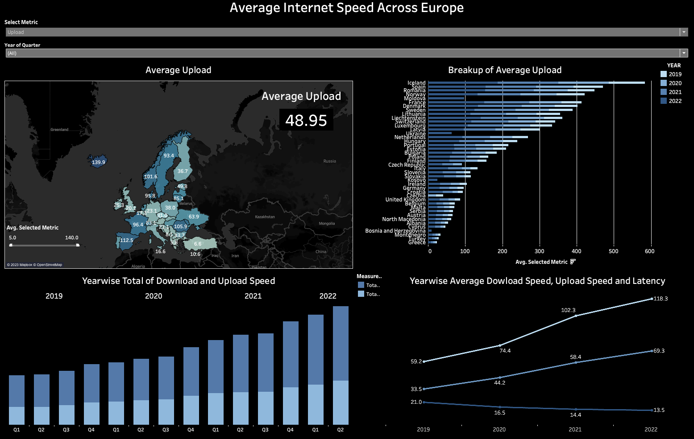

Internet Speed Across Europe
Is Europe's internet really getting faster, and who is ahead?
What I did
The original Makeover Monday chart on European internet speeds showed the numbers but explained little. I cleaned the dataset, fixing country names written in different languages and missing codes, and rebuilt it in Tableau as an interactive dashboard covering 42 countries, with a map, a country ranking, quarterly totals and yearly trends, all filterable by download speed, upload speed or latency.
What I found
Speeds roughly doubled from 2019 to 2022 while latency fell by more than a third. Iceland, Spain and Romania lead on upload speed, while Turkey and Greece sit at the bottom, so the gap between countries is still large.

Read the full story
The problem. The original chart listed speeds by country, but it was hard to compare countries, see trends or switch between metrics.
The approach. The data covered 2019 to the second quarter of 2022 in 522 rows. I standardised country names and codes, then added annotations and one filter to switch between download, upload and latency.
What a business can do. Benchmark countries in seconds and spot markets where connectivity is still a barrier. A few countries have missing quarters, so their averages should be read with care.